Greece and Rome — sanctuaries and temples, the prescribed buildings, priests and officials, and blood sacrifice
Greece
The sanctuary and the temple
The sanctuary
a sanctuary was a holy area containing a temple and altar, usually separated from the city by a wall
could contain temples and altars to many gods — not necessarily dedicated to one deity
usually had a fresh water source at the entrance for worshippers to purify themselves
contact with the dead, a new-born baby, or having committed homicide caused pollution — which could discourage the favour of the gods; removed by washing
The function of a Greek temple
primary purpose: to house the cult statue of the god — a residence on earth for when the god left Olympus
only priests were allowed inside — most worshippers never entered the building
the altar stood outside; this was where sacrifice took place — the most communal act of worship
during festivals the altar could involve the whole city
The temple building
usually rectangular, orientated east to west
stood on a foundation plinth with steps on all four sides, raising it above ground level
the colonnade ran around the outside, supporting the roof
the cella (naos) — the main room housing the cult statue
the opisthodomos — a rear room storing the city's treasures and offerings
The sanctuary and temple created a carefully managed boundary between the human and divine worlds. The water at the entrance, the wall separating sanctuary from city, the restriction of the inner temple to priests — all controlled who got close to the god and in what condition. The altar outside, not the temple inside, was where most Greeks actually worshipped. The temple was the god's house; the altar was where the relationship was conducted.
Exam focus
What was a sanctuary, and what did it contain?
What was the main purpose of a Greek temple?
Why were most Greek worshippers never allowed inside the temple?
What is meant by pollution in a Greek religious context?
Greece
Temple decoration
Pediments
the triangular space at either end of a temple — could contain sculpture or be left blank
the triangular shape created a challenge: figures had to decrease in size towards the corners; sculptors used reclining figures or animals to fill the narrow ends naturally
The Ionic frieze
a continuous strip of stone or marble running all the way around the temple
suited to telling a continuous story or including many characters in one scene
exemplified in the Parthenon — the Ionic frieze ran 540 feet around the entire building
The Doric frieze
a continuous strip divided into square spaces called metopes — each containing its own scene
suited to showing several stories or several scenes from one story
exemplified in the Parthenon (outer colonnade) and the Temple of Zeus at Olympia (twelve labours of Heracles)
The choice between Ionic and Doric frieze was a narrative decision. A Doric frieze with individual metopes suits a series of self-contained episodes — the twelve labours. An Ionic frieze suits a single unfolding scene — the Panathenaic procession on the Parthenon. Every surface of a Greek temple that could carry sculpture did, and every choice of subject was deliberate.
Exam focus
What is the difference between an Ionic and a Doric frieze?
What is a pediment, and what challenge did it create for sculptors?
Why might an architect choose a Doric frieze rather than an Ionic one?
Greece
The Parthenon — prescribed source
The Parthenon447–432 BC · Athens · dedicated to Athena Parthenosview temple
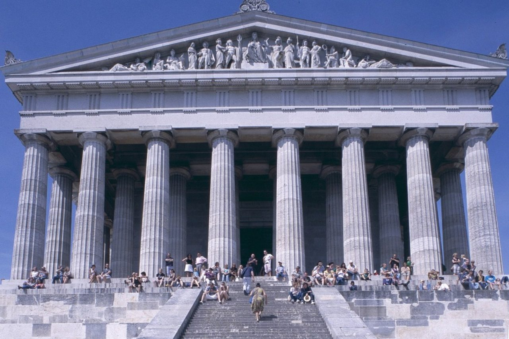
The Parthenon · Acropolis, Athens
Commissioned by: Pericles
Architect: notably Phidias, Iktinos, and Kallikrates
Material: Pentelic marble
Style: Doric outer colonnade with an unusual inner Ionic friezeview capital
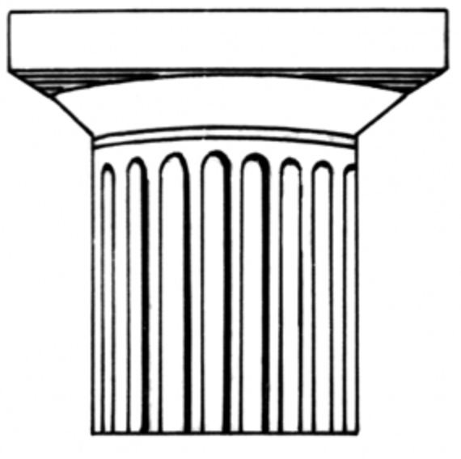
Doric capital — the plainest of the orders
Function: temple and treasury — the opisthodomos housed the Athenian Empire's treasury
Significance: symbolised the power, wealth, and piety of Athens
Context
in 480 BC the Persians sacked Athens and burned the Acropolis
after the Persian Wars Athens became head of the Delian League — effectively an Athenian Empire
Pericles moved the League's treasury to Athens and used the money to fund a massive building programme on the Acropolis
the Parthenon was the centrepiece — a statement of Athenian power, piety, and cultural supremacy
Plan
69.5 metres long and 30.9 metres wide — enormous
standard features: orientated east to west; three-stepped base; colonnade; naos and opisthodomos
unique feature: behind the external colonnade stood another row of columns supporting the inner Ionic frieze — an unusual addition providing another surface for sculpture
The pediments
heavily fragmented — we rely on Pausanias (second century AD) for their subject matter
Eastern pediment (above the entrance): the birth of Athena — springing fully armed from Zeus's head
Western pediment: the contest between Athena and Poseidon for possession of Athens — Athena's olive tree vs Poseidon's saltwater spring; the gods judged in Athena's favour
you will not be shown images of the original pediments in the exam as they are too fragmented — but you must know the stories and why they were chosen
The friezes
Outer Doric metopes: ninety-two metopes depicting four mythological battles — Gigantomachy (gods vs giants), Amazonomachy (Greeks vs Amazons), Centauromachy (Lapiths vs Centaurs), scenes from the Trojan War; all represent the victory of civilisation over barbarismview metope
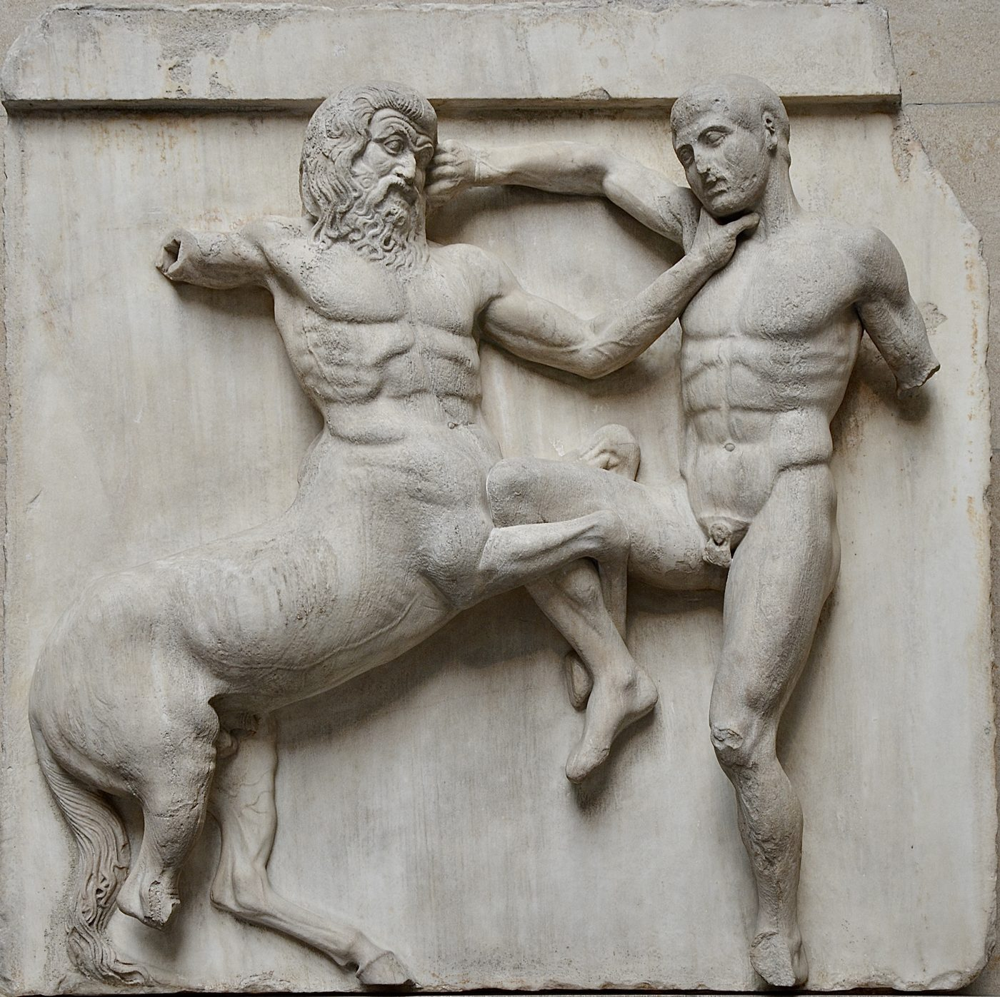
Parthenon Doric metope · a Lapith and a Centaur
Inner Ionic frieze: 540 feet long; depicted the Panathenaic procession — gods, humans, animals, and chariots in a continuous scene view frieze
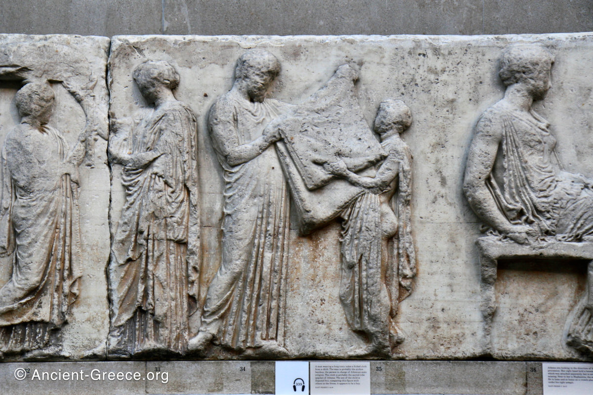
Parthenon Ionic frieze · the Panathenaic procession
The cult statue of Athenaview reconstruction
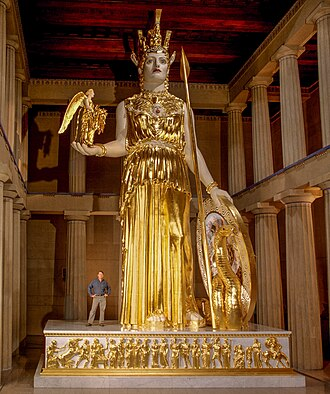
Athena Parthenos · modern reconstruction of Phidias's cult statue
a 13-metre chryselephantine statue designed by Phidias, added around 438 BC
chryselephantine — gold and ivory attached to a wooden frame; ivory represented her skin, gold her clothing
Pausanias describes it: upright, tunic to her feet; a Sphinx on the helmet; the head of Medusa on her breast in ivory; holding a statue of Victory; a spear in the other hand; a shield at her feet; a serpent near the spear
the statue no longer exists — the parts were made to be melted down if the city needed money; the Victory in her hand was solid gold and melted down in financial crises
Pausanias, Description of Greece, 1.24.5–7 — use in answers about the cult statue
The Parthenon was never simply a temple. It was a treasury, a war memorial, a political statement, and a monument to Athenian identity. Every surface tells the same story: the birth of Athena and the contest with Poseidon assert divine connection; the mythological battles frame Athens as the defender of civilisation — a reference to the Persian Wars as much as to ancient myth; the Panathenaic procession brings the living city into the building itself. Athens is chosen, powerful, and pious — and the Parthenon says so in marble.
Exam focus
What was shown on the eastern and western pediments, and why were these subjects chosen?
What was a chryselephantine statue? Describe the cult statue of Athena.
How did the Parthenon show off Athens's wealth, military strength, and piety?
'The Parthenon was more than just a temple.' How far do you agree?
Greece
The Temple of Zeus at Olympia — prescribed source
The Temple of Zeus at Olympia472–456 BC · Olympia · dedicated to Zeusview reconstruction
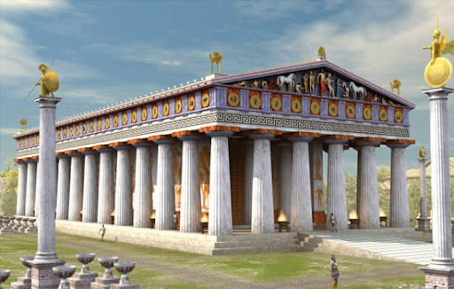
Reconstruction of the Temple of Zeus at Olympia
Architect: Libon
Material: local limestone (not marble — unlike the Parthenon)
Style: Doric view capital
Doric capital — the plainest of the orders
Location: the Altis — the sacred area at the centre of Olympia
Function: temple and treasury
Significance: symbolised the importance of Zeus, Heracles, Pelops, and the Greeks
The altar — older than the temple
the Altar of Zeus predated the temple by around 200 years — present from at least 776 BC
Pausanias describes it: built from the ash of thigh bones of animals sacrificed to Zeus; by his day it was 7 metres high — accumulated over roughly 925 years of sacrifice
the main sacrifice at the Olympics was a hecatomb of 100 oxen on the third day of the games
only men could ascend to the highest part; private individuals and the Eleans sacrificed there daily even outside the festival
the altar predated the temple by 200 years — showing that the altar, not the temple, was the essential element of worship
Planview plan
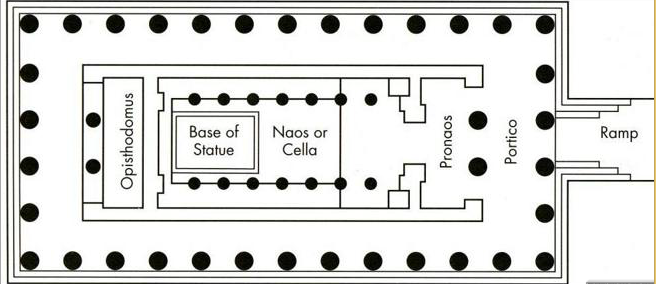
Floor plan — Temple of Zeus at Olympia
64.1 metres long and 27.7 metres wide — slightly smaller than the Parthenon
standard features: orientated east to west; three-stepped base; colonnade; naos and opisthodomos
built in local limestone plastered over to give a smooth finish
The eastern pedimentview pediment
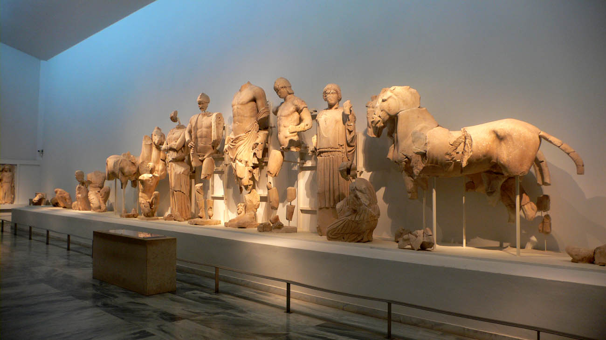
East pediment · Oenomaus, Pelops & Zeus · Olympia Museum
depicts the myth of Oenomaus and Pelops — the chariot race that led to the founding of the Olympic Games
Zeus stands at the centre as judge — appropriate for the god of justice at his own temple
on either side: Oenomaus and Pelops; then Hippodamia and Sterope; then horses; reclining figures at the corners representing Olympia's two rivers, the Kladeos and Alpheios
The western pedimentview pediment
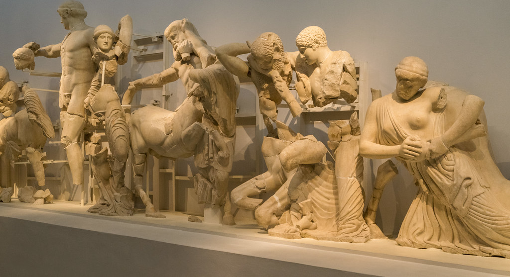
West pediment · the Centauromachy, Apollo at the centre · Olympia Museum
depicts the Centauromachy — the battle between the Lapiths and Centaurs
represented the victory of civilisation over barbarism — a popular motif in temple architecture
Apollo stands at the centre, arm outstretched
The metopes
the twelve labours of Heracles are sculpted onto twelve metopes — six above the front entrance, six above the back
their presence on a temple dedicated to Zeus emphasises Heracles's connection to Zeus and to the site of Olympia
The cult statue of Zeusview reconstruction
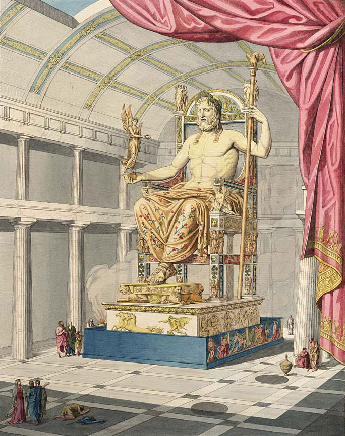
Zeus at Olympia · reconstruction of Phidias's cult statue
a 13-metre chryselephantine statue designed by Phidias — the same sculptor as the Athena in the Parthenon; added 448 BC
Pausanias describes it: Zeus seated on a throne; a garland of olive shoots; a Victory of ivory and gold in his right hand; a sceptre with an eagle in his left; sandals of gold; robes of gold embroidered with animals and lilies
in front: a pool of olive oil to maintain the ivory and create a shimmering reflection of light
the statue no longer exists — melted down like the Athena
Pausanias, Description of Greece, 5.11.13 — use in answers about the cult statue
The Temple of Zeus is the most useful comparison with the Parthenon because the two buildings are so similar in form but so different in effect. Both are Doric, both have chryselephantine cult statues by Phidias, both use their decoration to tell stories about their deity and the values of the site. But the Parthenon is built in gleaming marble at enormous expense as a statement of imperial power; the Temple of Zeus is built in local limestone at a sanctuary whose most important feature — the altar — predated the temple by two centuries. At Olympia, the building was secondary to the worship.
Exam focus
Describe the plan of the Temple of Zeus at Olympia.
What was shown on the eastern and western pediments, and why were these subjects chosen?
What does the fact that the altar predated the temple by 200 years tell us about Greek religion?
Compare the Temple of Zeus at Olympia with the Parthenon. Give one similarity and one difference.
Greece
Priests and officials
Priestshiereus and hiereia
Greek priests were called a hiereus (pl. hiereis); priestesses a hiereia — the name means "one who sacrifices to a god"
the priesthood was a temporary civic role — no special training required; some served for one festival, some for a year, others for life
a priest's job: perform the correct ritual at the correct time and maintain the temple — not to preach or provide pastoral care
a Greek citizen would hope to serve as priest of their local god at least once in their lifetime
gods usually attended by priests; goddesses by priestesses — with exceptions (Apollo at Delphi had both)
The mantis
a mantis (pl. manteis) was a Greek soothsayer — predicted future events by reading animal entrails or the flight of birds (augury)
if blemishes or imperfections were found in the entrails, the signs were bad
a mantis would accompany an army before battle to read the omens
some manteis built careers on consistent accuracy
The Greek priest was not a spiritual leader in any modern sense — they performed the correct ritual at the correct moment and maintained the god's house. The mantis served a different function: they read the signs the gods sent back. Together the priest and the mantis covered the two directions of the relationship with the gods — the priest spoke to the gods through ritual; the mantis listened to what the gods were saying in return.
Exam focus
What was the role of a Greek priest?
How did the role of a Greek priest differ from a modern religious leader?
What was a mantis, and what methods did they use?
Why was it important for an army to consult a mantis before battle?
Greece
Blood sacrifice
Overviewview vase
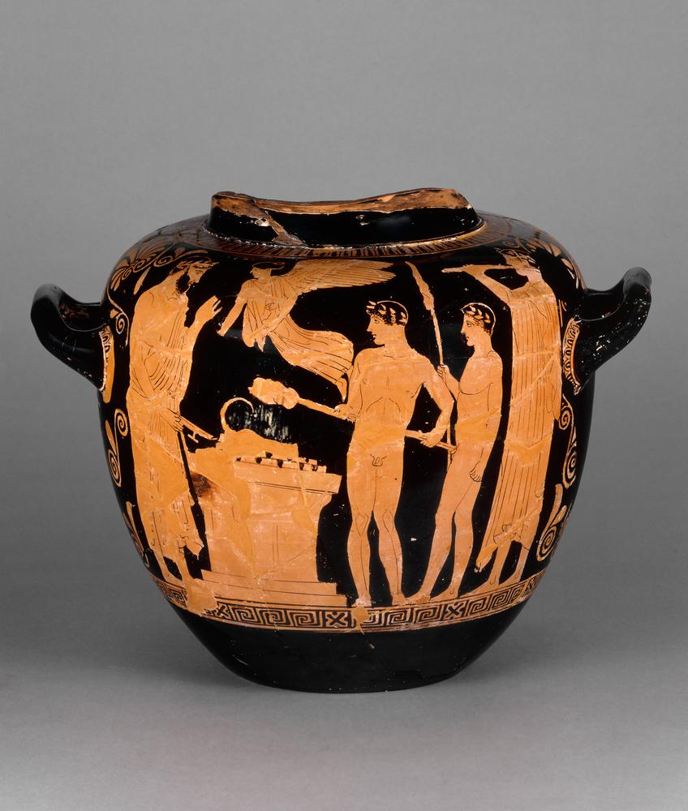
A Greek sacrifice scene on a vase
the main offering to the gods was a blood sacrifice — the ritual killing of an animal
the animal had to be the right one for the god — different gods required different animals
the most expensive sacrifice was the hecatomb — at least 100 oxen; held at major festivals such as the Great Panathenaia and the Olympics; approximately 8,000 drachmae (34 kilograms of silver)
if anything went wrong the whole process had to restart — a frightened animal was a bad omen
Stage 1Preparation
participants wore best clothes and garlands; the animal's horns were gilded if it had any
a maiden carried a basket containing barley grain — and hidden beneath it, the sacrificial knife
musicians played to reduce the chance of the animal taking fright
water poured on the animal's head to make it nod — its apparent consent was essential
the chief sacrificer uttered a prayer; participants threw grain into the fire to confirm their participation
Stage 2The kill
the knife was taken from the basket; the animal's throat was cut
blood poured over the altar; if small the animal was held above the altar directly
women performed a ritual scream at the moment of death
Stage 3Sharing the sacrifice
the god's portion — thigh bones wrapped in fat — burned on the altar; wine poured on the fire
this portion came from the myth of Prometheus, who tricked Zeus into choosing bones over meat
the entrails were read for omens by the mantis
remaining meat shared first among participants, then the wider community
meat was rarely eaten in ordinary Greek life — the sacrifice was one of the few occasions most Greeks ate it
the animal's skin was given to the sanctuary
The sacrifice was not simply about killing an animal for a god. It fed the community, created a shared moment of contact between the human and divine worlds, and involved the whole city when held at a festival. The requirement that the animal appear to consent, the hidden knife, the ritual scream — every detail has a purpose. A smooth, willing sacrifice meant the relationship with the gods was in good order. The communal sharing of the meat bound the participants together as much as it honoured the god.
Exam focus
Describe the three stages of a Greek blood sacrifice.
Why was it important that the animal appeared to consent?
What was a hecatomb, and when would one take place?
Why did the gods receive bones and fat rather than meat? Refer to the myth of Prometheus.
Rome
Roman temples
The sanctuary and templeRoman version
Roman sanctuaries followed the same basic principle as Greek ones — a holy area containing a temple and altar, separated from the city
like Greek temples, the Roman temple was primarily a house for the god — housing the cult statue
unlike the Greeks, Roman priests were not assigned to a specific temple or god
the altar was the most important part of the sanctuary for the public — it could exist without a temple (e.g. the Ara Pacis)
The temple buildingkey differences from Greece
Roman temple design mixed Etruscan and Greek styling
stood on a podium — a high platform with steps only at the front; you could only enter from the front
the colonnade ran around the temple but the side and rear columns were semi-engaged — half-embedded in the wall; only the front columns were fully free-standing
the focus was strongly on the front façade — designed to be seen head-on from a forum or street, not walked around
semi-engaged: a column that is embedded in a wall, half protruding from it
The podium is the most important difference between Greek and Roman temple design. A Greek temple could be approached and viewed from all sides — its colonnade was free-standing all the way round. A Roman temple directed your approach: the podium meant one way in, and the semi-engaged columns at the sides meant the building was designed to be seen from the front. Greek temples were objects of beauty seen in space; Roman temples were statements of power seen from the street.
Exam focus
What is a podium, and how did it affect Roman temple design?
What is a semi-engaged column?
Give one similarity and one difference between a typical Greek and Roman temple.
Why could you only enter a Roman temple from the front?
Rome
The Temple of Portunus — prescribed source
The Temple of Portunus120–80 BC · Forum Boarium · dedicated to Portunusview temple
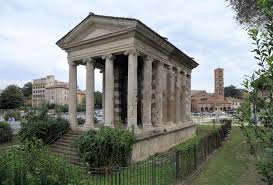
Temple of Portunus · Forum Boarium, Rome
earlier wrongly called the Temple of Fortuna Virilis (manly fortune) — more recently correctly associated with Portunus, god of harbours
Material: tufa (local stone) and limestone, covered with plaster to imitate marble
Style: Ionic view capital
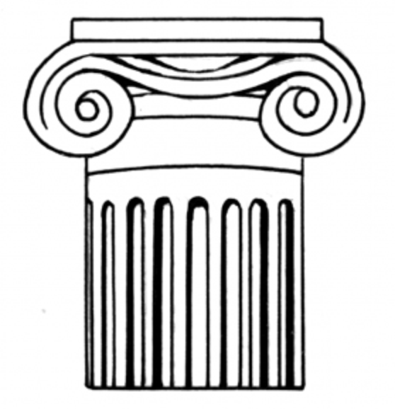
Ionic capital — identified by its scrolled volutes
Location: the Forum Boarium (cattle market), between the Palatine and Aventine Hills, next to the Tiber — a harbour in Roman times
Significance: one of the best preserved Roman temples; stands next to the circular Temple of Hercules Victor and the site of the Great Altar of Hercules
Plan and features
one of the best existing examples of a typical Roman temple
stands on a podium with steps only at the front — Etruscan influence
at the front: a porch with free-standing columns — Greek influence
at the sides and rear: semi-engaged columns attached to the cella wall — a Roman variation on the Greek style
the altar no longer exists but stood at the foot of the temple steps, as in Greece
use the Temple of Portunus in answers about typical Roman temple design and Greek/Etruscan influence on Roman architecture
The Temple of Portunus is the clearest example of how Roman temple design combined its sources. The podium and front steps come from the Etruscans; the porch and free-standing front columns come from Greece; the semi-engaged columns at the sides are a Roman adaptation. The result is a building that looks like a Greek temple from the front but works very differently — directing rather than inviting your approach.
Exam focus
Describe the key features of the Temple of Portunus.
How does the Temple of Portunus show both Greek and Etruscan influence?
Why is the Temple of Portunus a useful source for understanding Roman temple design?
Rome
The Pantheon — prescribed source
The PantheonAD 125 · Campus Martius · dedication debatedview temple
The Pantheon · Rome
Commissioned by: Hadrian; rebuilt after the original (commissioned by Augustus, built by Marcus Agrippa 27–25 BC) burned down in AD 80
Material: marble, brick, and concrete
Style: Corinthian view capital
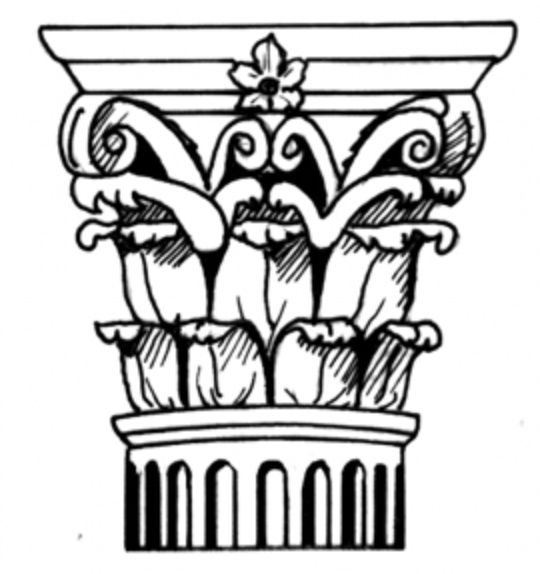
Corinthian capital — the most ornate, with acanthus leaves
Location: the Campus Martius (Field of Mars) — where the army assembled, elections took place, and Romans exercised
Significance: one of the best preserved ancient Roman buildings; its rotunda and oculus were unprecedented feats of engineering
Why the dedication is debated
Pantheon means "all gods" (Greek: pan = all, theos = god)
Cassius Dio (second century AD) wrote that the name was already debated in his time: one view — named because it contained statues of many gods including Mars and Venus; Dio's own view — named because its vaulted roof resembles the heavens
the debate itself is useful evidence — even ancient Romans were not certain of the original purpose
Cassius Dio, Roman History, 53.27.2 — use in answers about the Pantheon's purpose and dedication
Plan and unique features
from the front: follows the usual Roman plan — small plinth; free-standing columns at the front; semi-engaged columns at the rear of the porch
unique feature: a rotunda (circular space) at the rear, capped with a dome
at the top of the dome: an oculus — a circular opening approximately 9 metres wide; the only source of natural light inside the building
the circular plan allowed for several statues of gods around the interior
the Pantheon was the first building of this type — a remarkable feat of engineering
Decoration and inscriptionview inscription
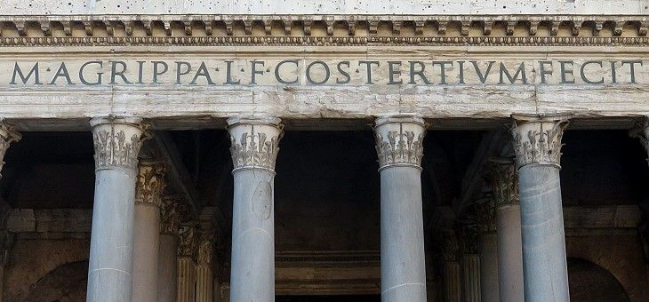
The Agrippa inscription on the frieze
the pediment shows signs of having once contained sculpture — now lost
Hadrian restored the original inscription from Agrippa's building: M. Agrippa L.f. cos. tertium fecit — "Marcus Agrippa, son of Lucius, built this when consul for the third time"
by restoring Agrippa's inscription rather than adding his own, Hadrian linked himself to Augustus and presented the rebuilding as an act of piety
The Pantheon is the most important evidence that Roman temples did not always conform to a standard plan. The Temple of Portunus shows what a typical Roman temple looked like. The Pantheon shows what Roman engineering could achieve when the usual rules were set aside. The dome and oculus were without precedent — no building in the ancient world had attempted interior spaces on this scale. That the building still stands largely intact nearly 1,900 years later is itself a testament to the engineering achievement.
Exam focus
What is an oculus, and where does it appear in the Pantheon?
Why is the dedication of the Pantheon debated?
Why did Hadrian restore Agrippa's inscription rather than add his own name?
How does the Pantheon differ from a typical Roman temple?
Rome
Religious officials
Priests — general role
Roman priests worked to uphold the pax deorum — the "peace of the gods"; the correct relationship between Rome and its gods
the principle: do ut des — "I give so that you give"; offer sacrifice and the gods will grant favour
priests did not preach a moral code — behaviour in private did not matter, provided the pax deorum was maintained
unlike Greek priests, Roman priests were not assigned to a specific temple or god
priests veiled their heads with their toga when performing religious duties
Roman priests worked part time — the rest of their time was spent in business and politics
becoming a priest could greatly advance a political career
The Pontificesview statue
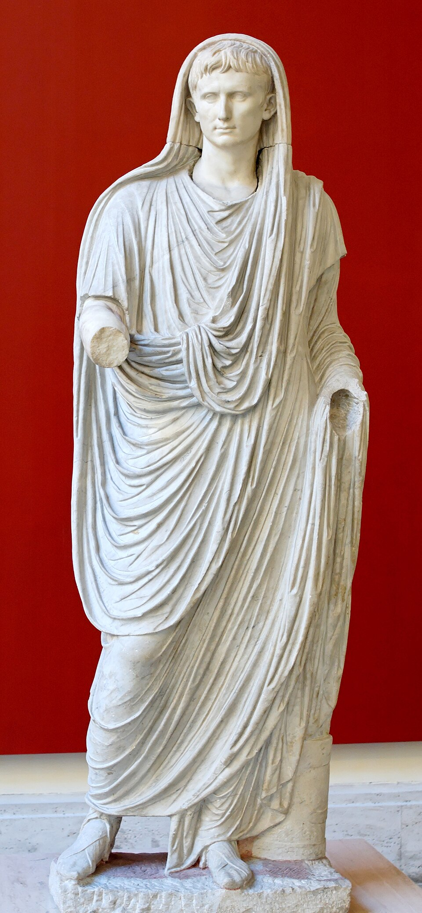
Augustus as Pontifex Maximus · veiled head (Via Labicana)
the most important college of priests in Rome — usually fifteen members
headed by the Pontifex Maximus — a lifelong post; the name means "bridge builder", possibly referring to the priest's role as mediator between humans and gods
from Augustus's election in 13 BC, the post was always held by the emperor
main roles: protection of temples; regulation of burial and inheritance laws; supervision of the religious calendar — controlling the calendar gave the pontifices immense power over when things could happen in Rome
The Augurs
an augur's main job: "taking the auspices" — reading the flight of birds, behaviour of animals, or direction of thunder to determine the will of the gods
auspices taken before battles, marriages, and business transactions
augurs carried a curved staff called a lituus
the founding of Rome involved augury: Romulus saw twelve vultures; Remus saw six; the dispute over who saw them first or in greater number ended in violence and Remus's death
augurs were accused of reading signs in favour of political allies — manipulation cannot be ruled out
The Vestal Virginsview statue
Statue of a Vestal Virgin
a college of six priestesses — the only female priesthood in Rome; they served Vesta, goddess of the hearth
lived in the House of the Vestals in the Roman Forum
Selection: chosen by the Pontifex Maximus from girls aged six to ten; fit and healthy with two living parents; from the most prestigious families; served for at least thirty years with a vow of chastity
Key duty: protecting the sacred flame of Vesta — believed to have been brought from Troy by Aeneas; if it went out, Rome would fall
also made the mola salsa and guarded state documents — treaties and wills (Octavian retrieved Antony's will from the Vestals and used it to justify war)
Privileges: front row seats at games; allowed to own property, make wills, and vote — rights other Roman women did not have
Punishments: whipped if the flame went out; buried alive if they broke their vow of chastity; the man responsible was whipped to death
The Haruspexview model liver
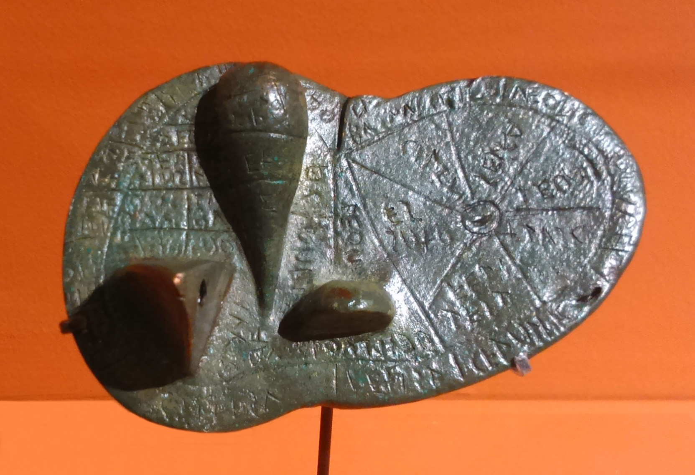
The Liver of Piacenza · a bronze model liver used by haruspices
of Etruscan origin — unlike the augurs, who had Greek roots
specialised in reading the entrails of sacrificial animals at important sacrifices
watched how the animal fell; examined the smoke and flames; then read the entrails — the most important was the liver
used a model liver as a guide; checked its consistency and looked for abnormalities such as blood spots
Roman religion was inseparable from Roman politics. The pontifices controlled the calendar — meaning they controlled when elections, trials, and business could take place. Augurs could declare omens unfavourable to block public events. The Vestals held state documents that shaped political careers. From Augustus onwards, the emperor was always Pontifex Maximus — fusing the highest religious and political authority in one person. In Rome, serving as a priest was not a spiritual vocation but a political tool.
Exam focus
What was the pax deorum, and what does do ut des mean?
What were the main roles of the pontifices?
What was an augur, and what methods did they use?
Describe the selection, duties, privileges, and punishments of the Vestal Virgins.
What was a haruspex, and how did their role differ from an augur?
Rome
Blood sacrifice
Overview
Roman sacrifices followed the same general procedure as Greek sacrifices — blood sacrifice was the most common form of offering
if anything went wrong the whole process had to restart
in a state sacrifice a pontifex led the ceremony; in a smaller sacrifice, a private citizen
the suovetaurilia — a pig, a sheep, and an ox sacrificed together; used for purification of new land or buildings; the animals were led in procession around whatever needed purifying before the sacrifice
Stage 1Preparation
all participants ensured they were clean and well-dressed so as not to pollute the sacrifice
the animal's horns were gilded if it had any; ribbons tied to its tail or horns
a good omen if the animal went to the altar willingly
the presiding priest veiled his head with his toga
flute players joined the procession to obscure any noises that might frighten the animal
Stage 2The kill
at the altar the priest sprinkled mola salsa (salt and flour, made by the Vestal Virgins) on the animal's head, followed by wine — causing it to nod; the animal had to appear to consent
the priest uttered a prayer to the god
a popa struck the animal on the head with a wooden rod to stun it
a cultrarius slit the animal's throat — it was important that the animal die with a single blow
Stage 3Sharing the sacrifice
the god received their share first — the priest uttered a prayer stating the god's name and reason for the sacrifice
the haruspex read the entrails for omens; then the entrails were cooked and offered to the gods
remaining meat shared with the wider community in a strict social hierarchy: priests first, then senate, then elite citizens, and so on
in a private sacrifice only the participants shared the meat
like Greece, meat was not common in the Roman diet — the sacrifice was one of the few occasions most Romans ate it
The Roman and Greek sacrifices are almost identical at their core — the animal's consent, the god's portion burned first, the communal meal. The differences are Roman additions: the mola salsa made by the Vestal Virgins, the popa and cultrarius as specialist officials, the rigid social hierarchy in the sharing of meat. Each addition reflects something broader about Roman society — the importance of the Vestals, the Roman tendency to formalise and institutionalise, the hierarchy that structured every aspect of Roman public life.
Exam focus
Describe the three stages of a Roman blood sacrifice.
What was the role of the popa and the cultrarius?
What was the mola salsa, and who made it?
What was a suovetaurilia, and when was it used?
Greece & Rome
Temples compared
Similarities
both had a sanctuary separated from the city by a wall, with a fresh water source at the entrance
both used temples primarily to house the cult statue — the temple was the god's house, not a place of congregational worship
both orientated temples east to west
both had a colonnade, a cella, and an altar outside the temple
both treated the altar as the central place of worship — more important than the temple building itself
both used temples to make political and religious statements about the power of the city or state
Key differences
Podium: Roman temples stood on a podium with steps only at the front; Greek temples had steps on all four sides
Columns: Roman temples used semi-engaged columns at the sides and rear; Greek temples had fully free-standing columns all the way round
Focus: Roman temple design emphasised the front façade; Greek temples were designed to be viewed from all sides
Priests: Greek priests were assigned to a specific temple and god; Roman priests were not
Materials: the Parthenon used expensive Pentelic marble; the Temple of Portunus used tufa covered with plaster; the Pantheon used brick and concrete with marble facing
Innovation: the Pantheon's rotunda and oculus have no Greek equivalent
The podium tells you something important about how each culture understood the relationship between a temple and its city. A Greek temple could be walked around and approached from any direction. A Roman temple directed your approach, funnelled you up the front steps, and presented a single monumental façade to the forum. Greek temples were objects of beauty seen in space; Roman temples were statements of power seen from the street.
Exam focus
Give two similarities between Greek and Roman temples.
Give two differences between Greek and Roman temples.
What is the significance of the podium in Roman temple design?
Greece & Rome
Officials compared
Similarities
both had priests whose primary role was to perform the correct ritual at the correct time — not to preach or provide moral guidance
both used soothsayers to read omens — the Greek mantis and the Roman augur both read the flight of birds and animal entrails
both linked the priesthood to civic life — being a priest was a public role, not purely a spiritual one
both believed that neglecting correct ritual could bring harm to the community
Key differences
Assignment: Greek priests were assigned to a specific temple and god; Roman priests served the state religion generally
Gender: Greece had no equivalent to the Vestal Virgins — the only formal female priesthood in Rome
Political power: Roman priestly colleges had direct political power — the pontifices controlled the calendar; augurs could block public business; the Vestals held state documents; nothing equivalent existed in Greece
Origin: the haruspex was of Etruscan origin — no Greek equivalent; the mantis was Greek
The emperor: from Augustus, the emperor was always Pontifex Maximus — fusing religious and political authority; Greece had no equivalent
The key difference is institutional. A Greek priest was an individual appointed to serve a specific god at a specific temple — their power was real but local, religious, and temporary. A Roman priestly college was a permanent state institution with defined powers and political connections. When Augustus made himself Pontifex Maximus, he was not just taking on a religious title — he was absorbing the most powerful priestly office in the Roman state into the imperial office.
Exam focus
Give one similarity and one difference between Greek and Roman religious officials.
What was the difference between a Greek mantis and a Roman augur?
Why were Roman priestly colleges more politically powerful than their Greek equivalents?
What was the significance of Augustus becoming Pontifex Maximus?
Greece & Rome
Sacrifice compared
Similarities
both used blood sacrifice as the primary act of worship
both required the animal to appear to consent — water poured on its head to make it nod; a frightened animal was a bad omen
both burned the god's portion on the altar first
both used communal sharing of the meat to bind participants together
both cultures ate meat rarely — the sacrifice was one of the few occasions ordinary people ate meat
both used soothsayers to read the entrails — the mantis in Greece, the haruspex in Rome
both treated a failed sacrifice as a serious religious problem requiring the whole process to restart
Key differences
Officials at the kill: in Rome a popa stunned and a cultrarius slit the throat — specific named officials; in Greece the chief sacrificer performed the kill themselves
Mola salsa: the Roman sacrifice used mola salsa made by the Vestal Virgins; Greece used barley grain
Hierarchy of sharing: in Rome the sharing followed a strict social hierarchy — priests first, then senators, then elite citizens; in Greece the sharing was among participants then the wider community without this formal ranking
Suovetaurilia: Rome had the specific combined sacrifice of a pig, sheep, and ox for purification; no direct Greek equivalent
Entrail-reading: the Roman haruspex was of Etruscan origin and used a model liver; the Greek mantis read entrails or bird flight without the same formalised toolkit
The two sacrificial traditions are strikingly similar at their core — the consent of the animal, the god's portion burned first, the communal meal. The differences are mostly Roman additions. Each one reflects something broader about Roman society: the mola salsa shows the Vestals' role in state religion; the popa and cultrarius show Roman formalisation; the hierarchy in sharing reflects the rigid social structure that shaped every aspect of Roman public life.
Exam focus
Give two similarities between Greek and Roman blood sacrifice.
Give two differences between Greek and Roman blood sacrifice.
What was the mola salsa, and why is it significant as a difference?
Explain why the Greeks and Romans engaged in blood sacrifice.
Greece & Rome
Who built more impressive temples?
The case for Greece
the Parthenon was built entirely in expensive Pentelic marble — a deliberate statement of Athenian imperial wealth
its decoration was extraordinary in scale: ninety-two metopes, two pediments, a 540-foot Ionic frieze, and a 13-metre chryselephantine cult statue — every surface carried sculpture
the Temple of Zeus at Olympia housed one of the Seven Wonders of the World — the chryselephantine statue of Zeus by Phidias; the pool of olive oil created a shimmering effect ancient visitors found overwhelming
Greek temples were designed to be viewed from all sides — the free-standing colonnade made the building a sculptural object in space
Greek temples expressed the identity of their city in stone — the Parthenon communicated what Athens stood for in a way that has never been forgotten
The case for Rome
the Pantheon's dome and oculus were without precedent in the ancient world — no Greek building attempted interior spaces on this scale
the oculus is the building's only light source: a circle of sky that shifts across the interior through the day — an effect no Greek temple attempted
the Pantheon demonstrated that Roman concrete and engineering could achieve things Greek post-and-lintel construction could not
Roman temples were embedded in the urban landscape — the podium and façade facing the forum meant they were part of daily city life, not set apart in a sanctuary
Rome built temples across an empire from Britain to Syria — the sheer scale of Roman temple building has no Greek equivalent
Reaching a judgement
For Greece: the Parthenon's sculptural programme and the chryselephantine statues are unsurpassed in the ancient world for artistic achievement
For Rome: the Pantheon's dome is still the largest unreinforced concrete dome in the world; the building is still standing and still in use
Conclusion: Greece produced more beautiful temples; Rome produced more innovative and enduring ones; the answer depends on whether you measure impressiveness by artistic achievement or by engineering ambition and lasting impact
The strongest answers will define what "impressive" means before arguing either way. Artistic achievement — Greece wins; the Parthenon's sculptural programme has never been matched. Engineering innovation and lasting physical presence — Rome wins; the Pantheon is still standing while the Parthenon is a ruin. Pick a position, define your terms, and stick to the argument.
Exam focus
Who constructed more impressive temples, the Greeks or the Romans? Use specific evidence. [15]
Compare the Parthenon with the Pantheon. Give one similarity and one difference.
How did the Parthenon reflect the power and values of Athens?
Which temple fulfilled its purpose better — the Parthenon or the Temple of Zeus at Olympia?
Greece & Rome
Which mattered more — the temple or the sacrifice?
The case for the temple
the temple housed the cult statue — the physical presence of the god on earth; without the temple, the god had no residence in the city
temples were permanent, monumental statements — the Parthenon still communicates Athenian piety and power more than 2,400 years after it was built
the scale of investment — the Parthenon cost the equivalent of the entire Athenian Empire's treasury — shows how seriously cities took the god's house
in Rome, temples were politically inseparable from the state — the Senate met at the Temple of Jupiter; the Vestals kept state documents in the Temple of Vesta; temples were civic institutions
The case for sacrifice
the altar was the most important part of the sanctuary for ordinary worshippers — not the temple
the Altar of Zeus at Olympia predated the temple by 200 years — showing that worship could exist without a temple at all
only priests could enter the temple — the sacrifice at the altar was the one act that involved everyone
the sacrifice was a living, communal act — it fed the community, created contact with the divine, and was repeated throughout the year; the temple was a static building
in Seven Against Thebes, Eteocles vows to honour the gods with blood sacrifice — not with temples; when the Greeks wanted to promise something to the gods, they promised sacrifice
hiera and religio are about performing the correct acts, not maintaining buildings — religion was defined by action
Reaching a judgement
For the temple: it made the city's relationship with the divine permanent and visible; the cult statue gave the god a presence that sacrifice alone could not
For sacrifice: the altar at Olympia predating the temple by 200 years is the strongest evidence — it shows that worship in its most essential form needed only an altar, not a building
Conclusion: sacrifice was more important to the lived experience of religion; the temple was more important to the public expression of religion
The altar at Olympia predating the temple by 200 years wins the argument. The Greeks themselves understood the altar as the foundation of worship — the temple came later as an elaboration. But the relationship between gods and humans was conducted at the altar, not inside the building. In daily life, in festivals, in war, in private prayer — it was sacrifice that maintained the relationship with the gods, not the existence of a beautiful building.
Exam focus
Which was more important to Greek and Roman religion — the temple or the sacrifice?
What does the fact that the Altar of Zeus predated the Temple of Zeus by 200 years tell us?
Why could most Greeks and Romans never enter the temple, and what did they do instead?
Explain the role of the temple in honouring Greek and Roman gods.
Greece & Rome
Were priests more powerful in Greece or Rome?
The case for Greek priests
Greek priests held exclusive access to the temple and cult statue — the only people who could perform the rituals inside
the mantis who accompanied armies held enormous influence — a bad omen could stop a campaign
priesthoods at major sanctuaries carried significant social prestige — the priestess of Demeter at Olympia was the only woman allowed to watch the Olympic Games
the Eleusinian Mysteries were controlled by priestly families who held hereditary rights — giving them power over access to the promise of a blessed afterlife
The case for Roman priests
the pontifices controlled the religious calendar — meaning they controlled when elections, trials, and public events could legally take place
augurs could declare the omens unfavourable before any major public act — effectively giving them the power to block or delay elections and military campaigns
the Vestal Virgins held state documents — Octavian used Antony's will, retrieved from the Vestals, to justify a war
from Augustus onwards, the emperor was always Pontifex Maximus — fusing the highest religious and political authority in one person
becoming a priest in Rome could directly advance a political career — in Greece, the priesthood was a civic duty, not a political stepping stone
Roman priests had collective power through their colleges — structured, hierarchical institutions; Greek priesthoods were individual appointments without equivalent institutional weight
Reaching a judgement
For Greece: Greek priests held exclusive religious authority — within the sanctuary their power was absolute
For Rome: Roman priests held power that extended far beyond the sanctuary — into the calendar, into politics, into military decision-making, into the office of emperor itself
Conclusion: Greek priests were more powerful within religion; Roman priests were more powerful within society; if power means influence over the lives of ordinary people and the direction of the state, Roman priests were considerably more powerful
The key difference is institutional. A Greek priest was an individual appointed to serve a specific god — their power was real but local. A Roman priestly college was a permanent state institution with defined powers and political connections. When Augustus made himself Pontifex Maximus, he was not just taking a religious title — he was absorbing the most powerful priestly office in the Roman state into the imperial office. That tells you everything about how much more powerful Roman priests were.
Exam focus
Were priests more powerful in Greece or Rome? Use specific evidence. [15]
What political powers did Roman priestly colleges have that Greek priests did not?
Why did ambitious Roman politicians seek priestly office?
Give one similarity and one difference between the role of a Greek priest and a Roman priest.
Flashcards
30 cards — click to flip, shuffle, or use ←/→ and Space